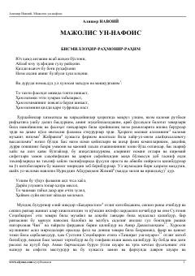

MAlisher Navoiyning o'z davri shoirlari ijodiga bag'ishlangan mashhur tazkira asari.
Ushbu asar buyuk mutafakkir Alisher Navoiy tomonidan yozilgan bo'lib, o'z davri va o'tgan zamon shoirlari hamda fozillari haqida hikoya qiluvchi muhim tazkiradir. Kitob sakkiz majlisga bo'lingan bo'lib, har bir qismda turli ijodkorlarning hayoti va ijodidan namunalar keltirilgan. Mazkur manba o'zbek mumtoz adabiyoti tarixini o'rganishda asosiy manbalardan biri hisoblanadi.